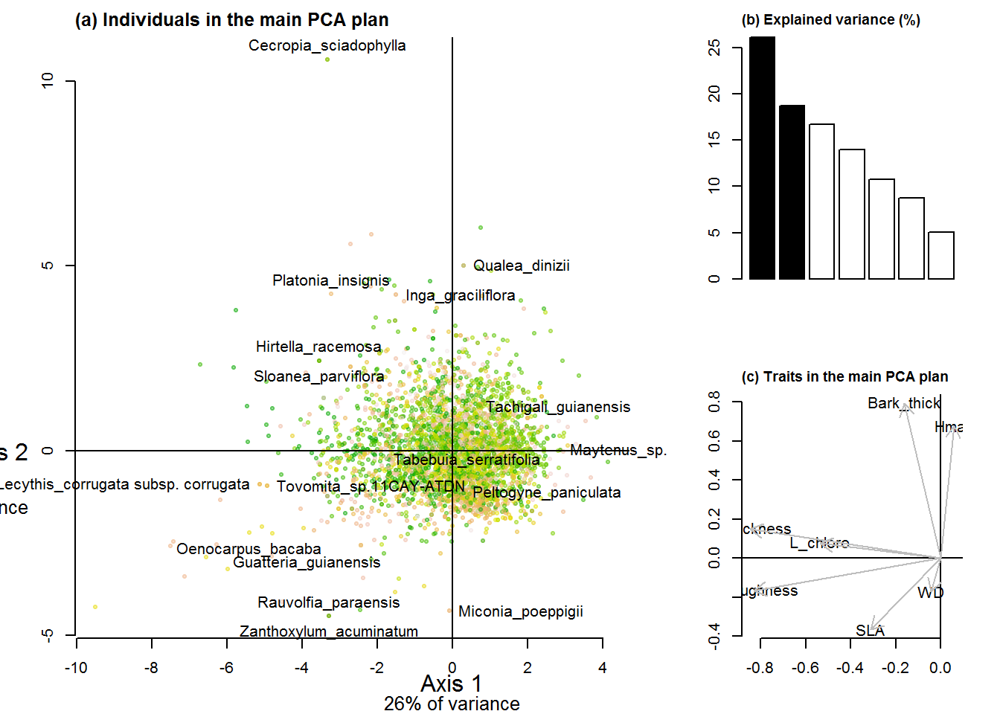

8 Figure A7: Functional PCA

(#fig:PCA_graphs)Summarizing plots of the functional PCA analysis defining communities functional space. (a) Plot of the samples from the BRIDGE functional database in the two dimensional main plan. (b) bow plot of the PCA eignevalues in percentage. (c) Plot of the 7 functional traits sed in the PCA analysis (Leaf and stem traits, and maximum species height).